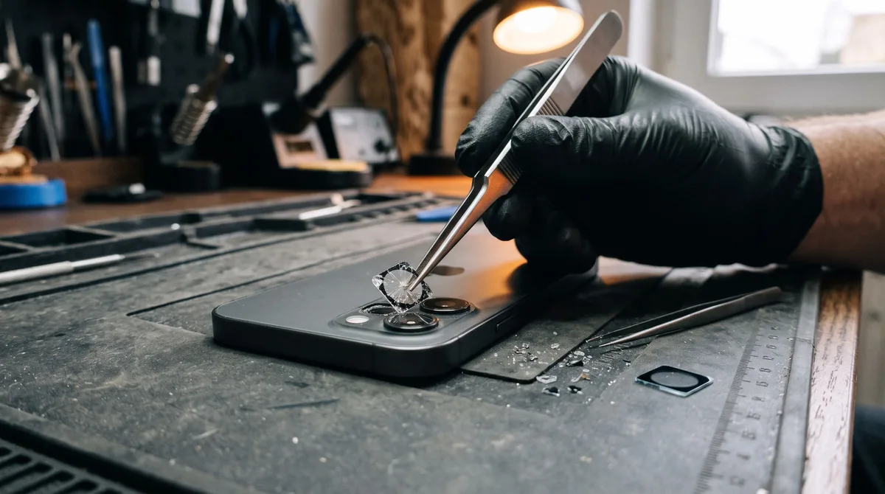
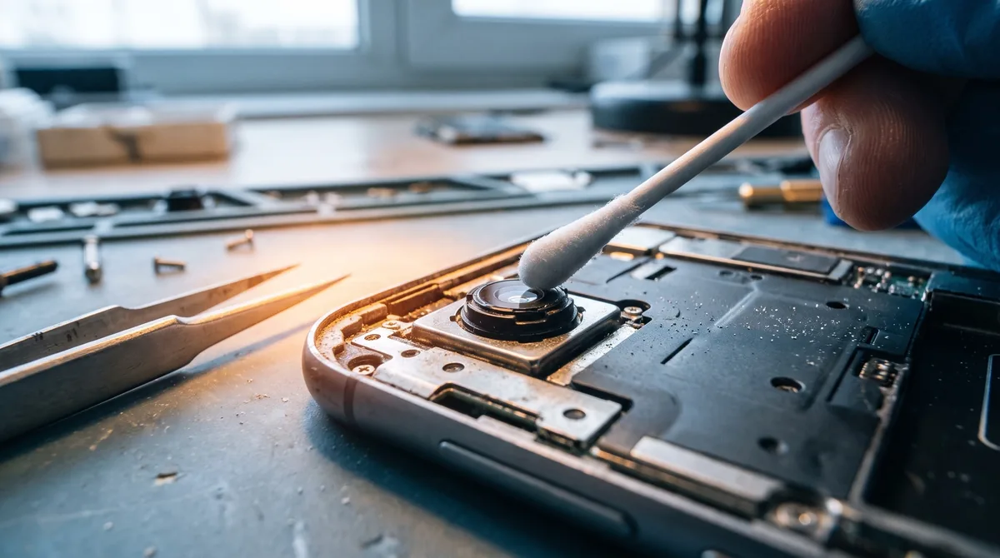

Разбилось стекло камеры: как заменить и почему не стоит тянуть
Обычно это замечают не сразу. Смартфон упал, экран целый, всё работает. А через пару дней снимки выходят мутными, будто сняты через запотевшее окно. Вокруг фонарей на ночных кадрах появляются световые ореолы, модуль долго ловит фокус. Человек протирает объектив краем футболки, а потом видит на маленьком прозрачном элементе скол или разлом.
Это предохранительное стекло модуля. Сама камера под ним, скорее всего, цела. Установка свежей детали — одна из самых быстрых и недорогих работ в мастерской, если не затягивать с ней.
Что это за элемент и зачем он
Над каждым модулем стоит тонкий прозрачный слой, вклеенный в заднюю крышку или в рамку вокруг объективов. Он оберегает камеру от царапин, пыли и воды. Сам объектив сделан из маленьких пластиковых линз, и он гораздо нежнее этого барьера.
У разных аппаратов защита устроена по-разному:
- один общий слой над всеми объективами — так у многих недорогих Samsung, Xiaomi, Honor;
- отдельное стёклышко над каждым глазком — так у новых Galaxy и большинства iPhone;
- элемент вклеен в заднюю крышку изнутри — тогда для ремонта панель приходится демонтировать.

Чем грозит повреждение прозрачного слоя
Здесь несколько моментов:
- Снимки портятся сразу. Скол рассеивает свет. Отсюда мутность, ореолы и блики, особенно вечером и против солнца. Иногда камере трудно сфокусироваться, потому что она «видит» повреждение.
- Внутрь попадают пыль и влага. Через разлом пыль оседает прямо на объективе. Её уже не протрёшь с внешней стороны. Если гаджет попадёт под дождь или вы зайдёте с мороза в тёплое помещение, влага может сконденсироваться внутри, и камера запотеет.
- Осколки царапают сам объектив. Это главная причина не тянуть. Мелкие осколки двигаются в кармане и при каждом нажатии на корпус, и рано или поздно процарапывают линзу. Тогда менять придётся уже не элемент, а весь модуль, а это совсем другие деньги.
- Можно порезаться. Края скола острые и цепляют пальцы, ткань кармана и подкладку сумки.
Сначала проверьте: может, это защитная накладка
Если вы покупали отдельное предохранительное стеклышко (тонкую накладку поверх блока), повреждение может быть только на ней. Подденьте край ногтем. Если накладка снимается и под ней всё целое, просто наклейте свежую. Это и есть «замена защитного слоя», и ремонт здесь не нужен.
Если ничего не демонтируется и разлом остался, разбито заводское стекло, и его нужно обновлять.
Как меняют прозрачный элемент
Мы меняем только стекло, камеру не трогаем (если в этом нет необходимости). Поэтому ремонт быстрый и стоит недорого.
- Прогреваем место вокруг модуля, чтобы размягчить клей.
- Аккуратно убираем осколки и следы старого клея.
- Очищаем линзу от пыли и стеклянной крошки. Это важный шаг: если оставить пыль, она так и останется под установленным элементом на всех ваших кадрах.
- Проверяем изделие на царапины.
- Вклеиваем свежую деталь на клеевую рамку.
- Делаем пробные снимки, в том числе против света.
Если элемент вклеен в крышку изнутри, сначала демонтируем заднюю панель, а при сборке ставим свежий клей. Это занимает чуть больше времени.
На большинстве аппаратов установка укладывается в 20–40 минут, и подождать можно прямо в мастерской.

Почему не стоит заклеивать клейкой лентой
Так делают часто, и понять можно: скол маленький, а кусок прозрачной ленты вроде бы его закрывает. На деле:
- лента мутная и бликует, кадры становятся ещё хуже;
- пыль под разлом всё равно попадает: пленка не держится плотно на краях скола;
- клей от ленты остаётся на стекле и в щелях, и при ремонте его потом приходится вычищать;
- осколки под пленкой никуда не деваются и продолжают царапать линзу.
То же самое с суперклеем и лаком для ногтей. Ещё хуже: клей затекает в разлом, может попасть на объектив, а убрать его потом без следов почти невозможно.
Клейкая лента годится только на день-два, чтобы не порезаться, пока вы едете в мастерскую.
Замена на Samsung, Honor, Xiaomi
Samsung. У многих моделей Galaxy A (A50, A51, A52 и похожих) один общий слой над объективами, его меняют с внешней стороны. В новых вариантах A и S у каждого глазка своё стёклышко в отдельной рамке. Если треснуло одно, обновляем только его.
Honor. У большинства аппаратов предохранительное стекло — общий компонент в выступающем блоке. Меняется снаружи, но на некоторых устройствах слой вставлен изнутри, и тогда демонтируем крышку.
Xiaomi, Redmi, Poco. Встречаются оба варианта. У популярных Redmi и Redmi Note защита часто меняется с лицевой стороны. Поскольку устройство важно, проще всего назвать его по телефону, и мы сразу скажем, как устроена защита.
iPhone. Над каждым глазком своё стекло в металлическом ободке. Меняется отдельно, камеру трогать не нужно.
Сколько стоит установка
Точную цену называем по аппарату. Позвоните или напишите в Telegram, назовите устройство, а лучше пришлите изображение блока объективов. Цена зависит от того:
- один это слой или отдельные стёклышки;
- меняется ли элемент с внешней стороны или нужно демонтировать заднюю крышку;
- есть ли деталь для вашего аппарата в наличии;
- не повреждён ли сам объектив.
Цену согласуем до начала работы. Если окажется, что разбита только накладка, менять ничего не будем.
Как защитить камеру после ремонта
- Наклейте предохранительное стекло на камеру. Оно стоит недорого, а при падении трескается вместо заводского.
- Возьмите чехол с бортиком вокруг объективов. Бортик должен выступать над блоком, тогда при падении на спину камера не касается земли.
- Не кладите гаджет линзами вниз на стол или асфальт.
- Не носите аппарат в одном кармане с ключами.
Вопросы
Можно ли продолжать фотографировать с треснутым стеклом?
Можно, но кадры будут хуже, а риск поцарапать саму линзу растёт с каждым днём. Лучше обновить защиту, пока разлом не добрался до камеры.
Почему на снимках пятно, хотя снаружи стекло чистое?
Значит, пыль или влага попали под элемент, на объектив. С внешней стороны её не убрать: нужно демонтировать стекло, почистить камеру и поставить свежее.
Изменится ли качество кадров после установки?
Если сама линза цела, снимки будут такими же, как до падения.
Пропадут ли данные?
Нет. Мы меняем только прозрачный элемент, память смартфона не затрагивается.
Меняем стёкла на камерах в Мариуполе каждый день с 10:00 до 20:00. Можно привезти гаджет или вызвать мастера: в Левобережный район выезд бесплатный. Звоните: +7 949 609-06-43.